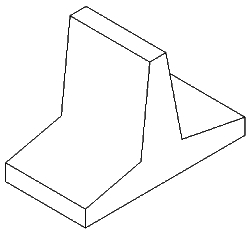

в Бресте:8 (0162) 53 – 16 – 68, 8 (029) 507 – 41 – 20 МТС
в Чернавчицах:8 (0162) 94-54-32, 8 (033) 644 - 54 – 32 МТС
|
Узнать актуальные цены и заказать продукцию можно по телефонам: в Бресте:8 (0162) 53 – 16 – 68, 8 (029) 507 – 41 – 20 МТС в Чернавчицах:8 (0162) 94-54-32, 8 (033) 644 - 54 – 32 МТС |
Гасители Т-образные применяются для гашения энергии водного потока и выравнивания скоростей.
|  | ||||
| Марка конструкции | Габаритные размеры, мм | Масса конструкции, кг | ||
|---|---|---|---|---|
| L | B | H | ||
| T4 | 500 | 750 | 500 | 138 |
| T6 | 500 | 750 | 700 | 160 |
| T8 | 500 | 1000 | 950 | 312 |
| T10 | 500 | 1000 | 1250 | 358 |
В марке изделия буквы обозначают тип конструкции, цифры – округленно высоту стенки в дециметрах.
СТБ 1253-2001.
Класс бетона B-25.
Рабочая арматура класса А-I.
Конструкция относится к сфере гидротехнического и мелиоративного строительства. Принцип работы изобретения следующий.
Идущий с напором поток воды проходит по горизонтальной части канала и натыкается на препятствие из гасителей, расположенных в один или несколько рядов,
зачастую в шахматном порядке. Ударяясь о стенку, струя меняет направление движения, расщепляется, происходит соударение струй потока.
Перед линией Т-образных гасителей можно наблюдать сложное обратное движение воды. Уровень воды здесь поднимается.
После линии гасителей энергии сглаживается поверхностный характер движения воды, снижаются придонные скорости течения.
Формируется поверхностный характер движения течения, что улучшает гидравлические условия функционирования отводящего русла.
Железобетонные гасители (армированные бетонные) используются для снижения скорости течения в реках и каналах.
Это предотвращает смыв и размыв берегов, предотвращает активизацию оползней, защищает таким образом сельхоз угодья, частные строения,
находящиеся вблизи рек.